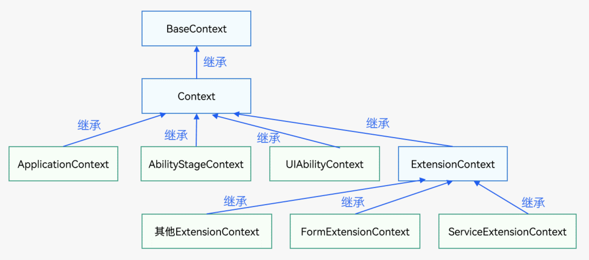
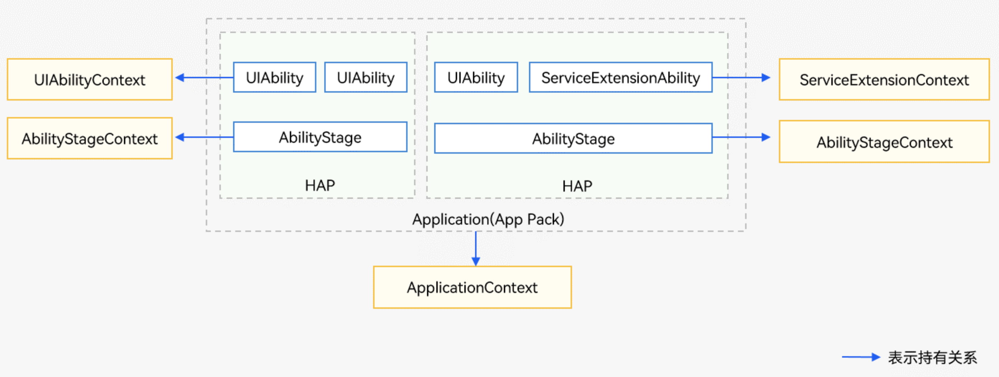
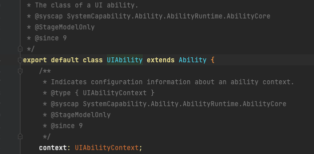

应用上下文Context
概述
1 | * Context是应用中对象的上下文，提供了应用的一些基础信息，如resourceManager（资源管理）、applicationInfo（当前应用信息）、dir（应用开发路径）、area（文件分区）等，以及应用的一些基本方法，如createBundleContext()、getApplicationContext()等。 |
context 继承关系

context 持有关系

context 使用方式
ApplicationContext
应用级别的Context。ApplicationContext在基类Context的基础上提供了订阅应用内Ability的生命周期的变化、订阅系统内存变化和订阅应用内系统环境的变化的能力，在UIAbility、ExtensionAbility、AbilityStage中均可以获取。
示例
1 | //其中，this.context代表在UIAbility、ExtensionAbility、AbilityStage中获取的UIAbilityContext、ExtensionAbilityContext、AbilityStageContext |
注册监听应用内生命周期 示例
1 | import UIAbility from '@ohos.app.ability.UIAbility'; |
取消监听应用内声明周期 示例
1 | import Ability from '@ohos.app.ability.UIAbility'; |
注册对系统环境变化的监听 示例
1 | import UIAbility from '@ohos.app.ability.UIAbility'; |
注册对系统环境变化的监听 示例
1 | import Ability from '@ohos.app.ability.UIAbility'; |
杀死应用所在的进程 示例
1 | let applicationContext = this.context.getApplicationContext(); |
思考？？
1 | 在具体业务过程中，很多地方都可能会需要用到页面的声明周期，比如在页面加载的时候请求网络，页面消失的时候取消加载，这时候我们就可以通过该方法来进行监听页面的生命周期 |
UIAbilityContext
每个UIAbility中都包含了一个UIAbilityContext属性，UIAbilityContext模块提供允许访问该UIAbility的资源的能力，提供获取Ability的配置信息、操作Ability启动、停止、获取caller通信接口、应用向用户申请授权等能力等。
获取 UIAbilityContext
1 | // UIAbility自身包含了UIAbilityContext，通过this.context即可获得。 |
源码中定义了UIAbilityContext

启动一个新的 UIAbility
通过调用UIAbilityContext.startAbility方法，可以启动一个新的UIAbility实例。
使用规则：
- 调用方应用位于后台时，使用该接口启动Ability需申请ohos.permission.START_ABILITIES_FROM_BACKGROUND权限
- 目标Ability的visible属性若配置为false，调用方应用需申请ohos.permission.START_INVISIBLE_ABILITY权限
- 组件启动规则详见：组件启动规则（Stage模型）
示例
1 |
|
疑问？
- 通过ability启动另一个ability，在任务栈中会出现两个页面，如果我希望他们之间只有一个应该怎么办呢？
- 一个hap是否只允许有一个ability？
- 默认只有一个，你可以通过手动的方式去添加，但是并不建议这样做，推荐使用一个ability获得最佳体验
获取 UIAbility 返回结果
AUIAbility通过startAbilityForResult开启一个新的BUIAbility时，当新的BUIAbility要结束工作时调用terminateSelfWithResult可以终止BUIAbility并且返回结果给AUIAbility。
使用规则：
- 调用方应用位于后台时，使用该接口启动Ability需申请ohos.permission.START_ABILITIES_FROM_BACKGROUND权限
- 目标Ability的visible属性若配置为false，调用方应用需申请ohos.permission.START_INVISIBLE_ABILITY权限
- 组件启动规则详见：组件启动规则（Stage模型）
示例
1 | // AUIAbility 页面ets |
AbilityStageContext
AbilityStageContext是AbilityStage的上下文环境，继承自Context。
AbilityStageContext提供允许访问特定于abilityStage的资源的能力，包括获取AbilityStage对应的ModuleInfo对象、环境变化对象。
ServiceExtensionContext
仅对系统应用开放
官方文档